Plan Lab
TODO: update flow, app references and screenshots TODO: update flow, app references from PIZZA to EchoLogic and screenshots
Introduction
TODO: add here more about Plan
How to switch to Plan from Home Page
| Step | Details | Additional Information |
|---|---|---|
| 1 | You can switch to Plan by either pressing "Let's go to Plan" button on its tile | 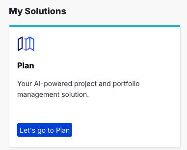 |
| 2 | Or you can always switch using the central app switcher on the top left of your screen |  |
Demo Data or New Application with Sample Data
Setup Demo Data
You can use the pre-created Plan application from your Loop and add sampl data to it please follow this document to import Demo data into Plan.
How to create a new Application
If you want to create a new Application and do not want to use the pre-created application from your Loop please follow the instructions how to create a new Application with Sample Data.
Let's go with Plan
Select Plan application to use
If you have not set your default Plan application you will be provided with a screen with all applications you have access to.
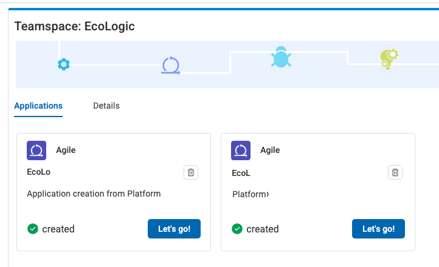
Set the provided app as default and presss "Let's go" to proceed.
Welcome Page for first time users
If you have logged in the first time into Plan you will get a Welcome Screen:
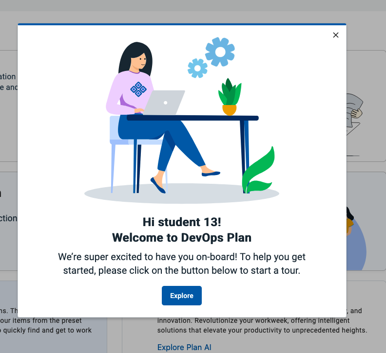
By pressing the button "Explore" a new page is shown which provides an Introduction to Plan and the used workflow model for the selected application:

Use Home Button to switch to Plan Home Page
Please use the "Home" button on the left sidebar to switch to the Home page for Plan.
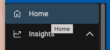
This Home page will provide you some basic information and also the means to switch between Plan applications (My Applications Button on the right)
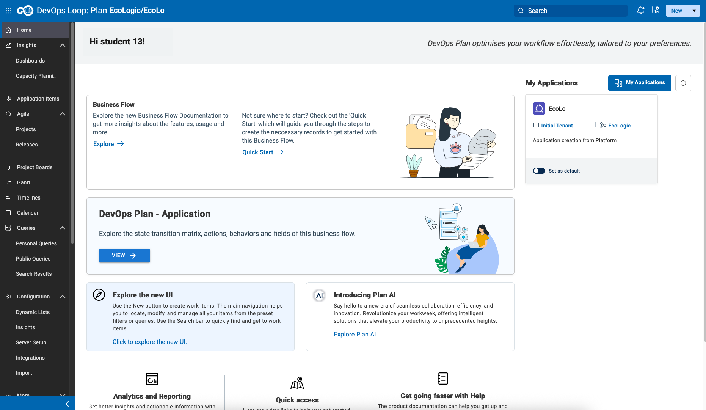
The explore options on this page will forward you to the Exploration page mentioned above.
Explore the technical worflow
Pressing the button "View":

will open a new view to the technical details of the used workflow for the selected application.
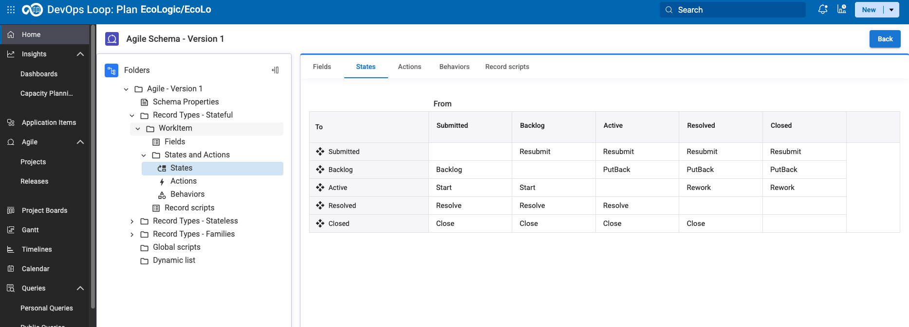
This view provides the used record types, fields, transition matrizes and more.
AI Assistant
Select the AI Assistant Icon  from the Sidebar 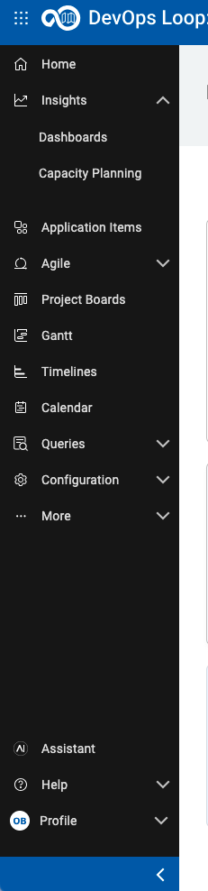
from the Sidebar 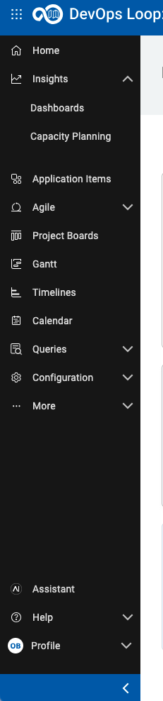
Accept the terms of service 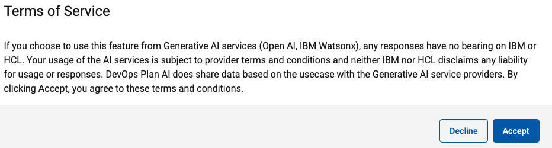
AI Assistant Chat Dialog
The AI Assistant Chat Dialog opens 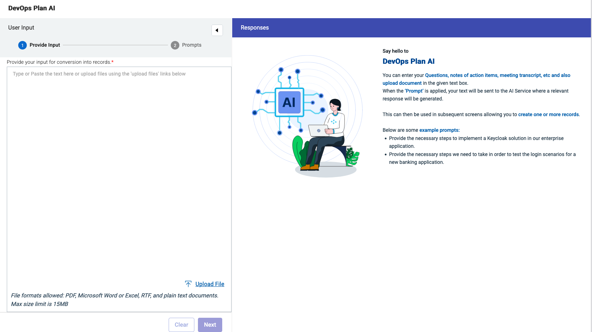
Enter Now a prompt, you can use the example prompts, or enter your prompt 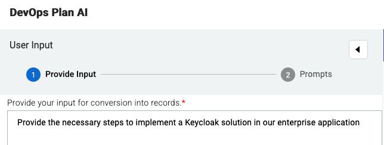
Click on the Next Button 
AI Assistant Type of Output
Now select the type of Output you want. We will select Generate Action Items 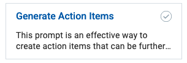 from the Applying Prompts page 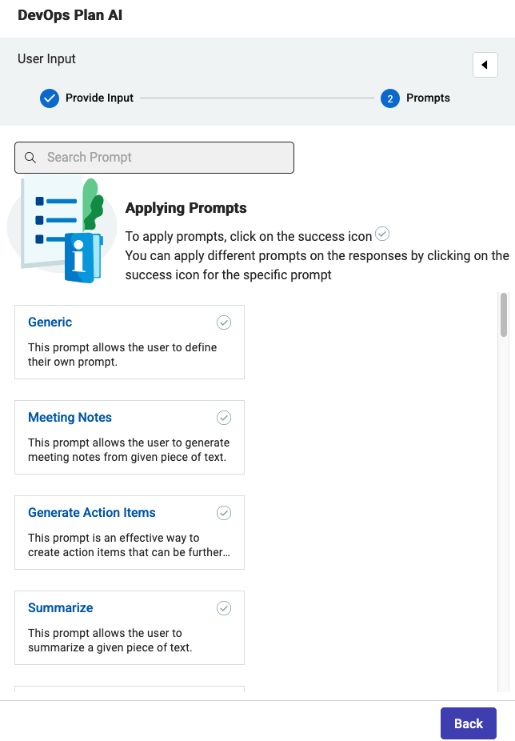
This will generate a set of responses 
Click the Select Button 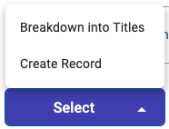 and select Break Down into Titles
This will convert the list of responses to a list with checkboxes: 
Select a few you like from the list 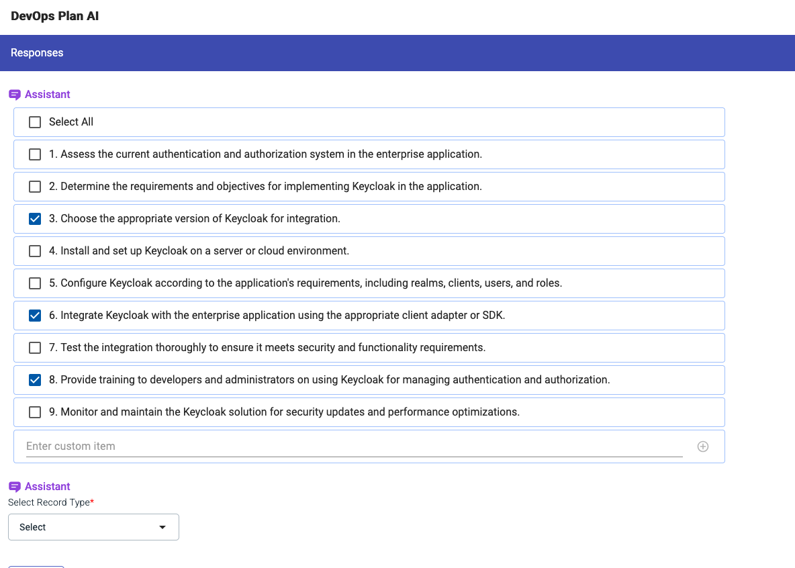
AI Assistant Create Records from Responses
Click the Select Record Type Button  to select Workitem from the list
to select Workitem from the list 
In the next Dialog  select the right Project and Workitem Type for example Project: Echologic and Type: Epic
select the right Project and Workitem Type for example Project: Echologic and Type: Epic 
Press the Create Records Button 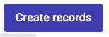 to get the Epics created.
A few seconds later all newly created records are now created 
Press Done  to finish using the AI Assistant
to finish using the AI Assistant
Work with Boards
Please follow these instructions to learn more about Boards.
Create and customize a new Project
Please follow these instructions to create a new Project.
Work with Queries
Please follow these instructions to show how to work with Queries
Integrations
Control/GIT/SCM
- 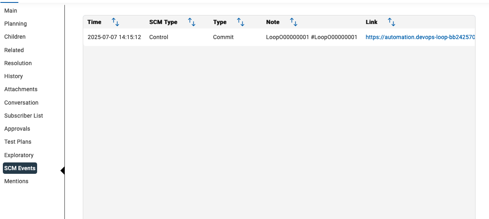
Conclusio
Congratulations! You have finished the Plan lab and have got a short overview of its capabilities.